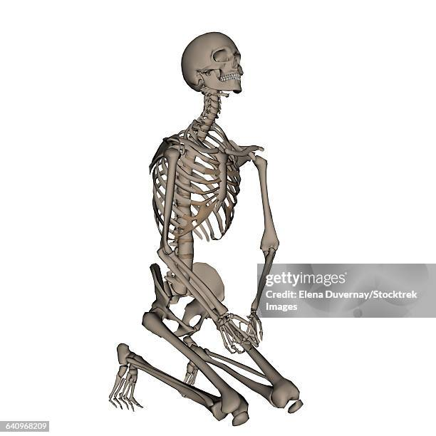
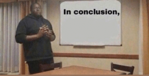
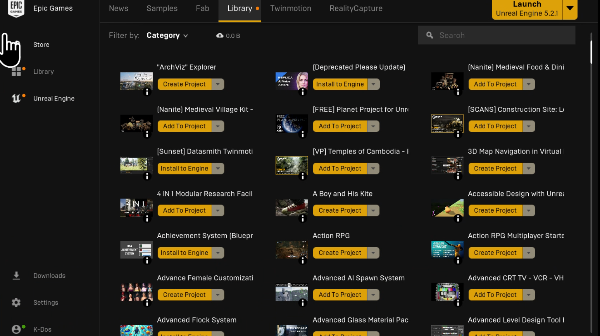

at this point my own website should be renamed to why am i an idiot dot com.com
Those Who Know, yeah the domain is .us 🦅 🦅 cuz I thought sus == funni

but actually, it turns out that any .US 🦅 domain is put on the WHOIS
fbi most wanted list, so anybody can find my address, phone number, and
prob then cook up to find my IP address or sum shit.😭 😭 😭
I didn't realize this until I got 10 spam calls in less than an hour the next couple of days
(it's sorta cooled down ig 💀🙏).
So in conclusion:

To those who somehow are reading this and beforehand were thinking of buying a
.us domain, it's ass dawg ¯\_💀_/¯
Jan 30: new game assets humble bundle dropped
Humble Bundle Link
It's one of those mixed genre stuff that always claim it's saving billions of dollars in assets.
Ion even started a single Unreal Engine tutorial befo
(but I have been hordin all the monthly free assets for 3 years now 💀 lolllll).

I might j buy it if I had the funds like that but it's j gonna be added to the shelfz.
But they do look cool doe.
The cathedral one straight out of lothiric from DS3 type type.
March comes in like a lion : 3-02-2025
So Zipcon was 2/15, and I was going to post this shortly after, but I sorta got
overwhelmed,overstimulated burned outed and was on sum bulll anyway a bit about Zipcon if ya wanna
read some yap
but first heres what this I want to show from this post a digitized drawing i submitted for the
manga cover
contest::

Here's a new line of text added to the blog post.
(I'll have the webpage for it in the art gallery soon)
you can read more about why it is N from pokemon BW in this yap:
- This is actually the second time I’ve gone to a convention; the first was Ohayocon all those
years ago.
- I’ve seen sthg about this con when I first came back to Akron since they set this up at the
school
union, is this common anime convention grounds? seems intresting place to put their even cuz
like for its cool if you lwky fw anime
and
dont mind furry 💀
- oh well it's free for me and only like 9 mins away from my house, so we ball.
-
Last year I was going to go
I was going to go last year only because the voice actor for Xiangling from Genshin
(the
one character that’s f2p lolll) was attending. Thought maybe I could make some art
since
every Zipcon is held near Lunar New Year. She could plug my shi, and I could start
gaining traction without having to manually search internet ppls. Maybe in the next
couple of years, I’d have my own panel at Zipcon to show off my indie game + web
manga
centered around the backrooms liminal space FPS battlegrounds.
- - i would first need to setup instagram art so that i would have a profile that
seems a bit active
- but i only realized the idea 2 weeks before and barely got to even coloring the
drawing and just dipped on that idea.. when the day came
- yeah I got a different mindset now this year im just taking things at my steady pace so things
wont take off for years lmao
- But guess I was too slow—I planned to drive and show up 30 min early to get some time in the
artist alley before my first panel.
- tbh it’s hard to do things outside my comfort zone by myself.
Manga Cover Art Contest
- I got to the first panel 11 min late because I got to campus 5 minutes late.
- My dumb ahh thought that since it’s a 1-hour long panel, I’d get the full 60 minutes to
draw.
- Turns out the time limit was 40 minutes, and I already showed up late 💀.

- We had to limit our drawing to one of these 6 manga

- my idea was modernizing N’s alr prettyboy ahh to look like the webtoon boys with the ulzzang
look
- and the whole time i could not get the image of Steel ball run cover out of my head and year of
the wood snake since seeing the snake guy from demon slayer

- because N wears a hat
- But tell me out of the 20 ppl there how I showed up late still managed to get a consolation
prize of 5th ? :lipSmackfinessW:

Artist Alley & Regrets
at the artist alley it was the first time I met another Vietnamese person that goes to Akron LOLLL 😭
and shes a good artist but I only saw this like at the last 10 minutes
I shouldve asked if she had made a poster of it that wouldve been so cool to have as a poster honestly
…… ughh
poster side
poster
side
and i still held regret not spending a bit more to get something out of the norm: like at
Ohayocon 22 i missed out on getting a really nice poster at jisu’s booth (the booth
right
next to quisteen’s coincedntally enough lul)
like at the time i was like “ehh imagine having a splatoon poster on my wall *smirkling
sarcastic* “
but
 HOLYYY PEAK THIS IS SICKKK
HOLYYY PEAK THIS IS SICKKK

the dots sorta didnt start connecting until i was about to leave..
honestly asking about that poster wouldve prob been the way to ask if she’s viet if wasn’t too afraid
and just tried … anyway after the artist alley chabangs parosing i kinda just wanted to go home,,
there’s always next year to at least say hi and see her again to be less of a stranger ig..(or the later
years when Im ready to fully be an artist ☠️) if even the chance she still happens to be into setting a
boothe up next zipcon
there was more panels i wanted to go to
particular this perfomance one because I found out the girl that sits next to me in speech class is a
really cool cosplayer idol and being there wouldve been the moment we both get to meet each other as
anime fans in the right setting
i only had a hint she mightve been since in the icebreaker of d00m we had to introduce our partner so
she told me general interest of watchin anime and netflix but nun too deep
unfortuately the icebreaker speech was delayed because of a snowday and then the prof took a day off
and then after that class, there were other school holidays to now she stopped showing up
(to be fair i stopped going to because attendance not mandatory loll)
but i prob just missed out, there prob goes my chance at getting help doing makeup and cosplay outfit
help from a professional cosplayer, and for next year I could have someone readily nearby Akron to help
me find a group to go to zipcon with so I dont walk in the cold snow alone again. (it is what it is)
maybe i scared her off from going to that speech again, maybe its true that people be
i could sorta feel class because 🗿
the whole time in that class i honestly just put the whole class on mute so i could do planning and
coding for the data structures class right after (which here at Akron is not even a percent of challenge
that was foundations 2,
just turn in work at the last minute with chatgpt and get an A even if the assignment literally looks
like its directly a product of chatgpt-ism, the professors rmp says it all 💀

its sorta un-justified because the prof is very nice and patient with the people in his class but Akron
kinda dumped a work load of teaching 5 different classes from CS1 to fullstack programming so i kinda
see where the disorginization and last minute notice are from
im still waiting for him to announce when the next weekly inclass quiz is bc the first and only one was
in january and i really want to message him and see if i could just take in online.
the class is literally free but i didnt want to accept that until now
and now when i have more patience to not be 🗿 and try making small talk in speech class the opportunity
left and its late now that its almost march.
It just sucks I was one sign off in letter grade to meet the minimum passing grade in foundations 2
(during pandemic era also) so that i dont have to waste effort in repeating datastrucre algorithms as a
tentative class…
- there’s a gen ed class that i was going to take in person “japan film appreciation” that I was
going to ask her for help and advice if she took it or is planning to take it
- unfortunately i didnt get that much from the artist alley bc instead of just checking out
boothes like a normal person I just circled around and made laps around them and windowed shop
from afar to make sure I know what im looking for 🐌💀
though nothing around here will ever lives up to the peak of the time Ohayocon was on everybody’s
soullll
 https://img.notionusercontent.com/s3/prod-files-secure%2Fbe9c4e16-4c2b-44e5-8d3b-4da4a43d68ee%2Fef306dda-b7af-4adf-81e6-242b0a10e13c%2FIMG_1760.jpg/size/w=2000?exp=1741301012&sig=StNKTtuer5QZtgw1FqSy_Sw-JNRjkjKIxRCZg6uBids
https://img.notionusercontent.com/s3/prod-files-secure%2Fbe9c4e16-4c2b-44e5-8d3b-4da4a43d68ee%2Fef306dda-b7af-4adf-81e6-242b0a10e13c%2FIMG_1760.jpg/size/w=2000?exp=1741301012&sig=StNKTtuer5QZtgw1FqSy_Sw-JNRjkjKIxRCZg6uBids